Loss Functions
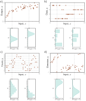
Predicting distributions over outputs. a) Regression task, where the goal is to predict a real-valued output y from the input x based on training data {xi, yi} (orange points). For each input value x, the machine learning model predicts a distribution Pr(y|x) over the output y ∈ R (cyan curves show distributions for x=2.0 and x=7.0). Minimizing the loss function corresponds to maximizing the probability of the training outputs yi under the distribution predicted from the corresponding inputs xi. b) To predict discrete classes y ∈ {1, 2, 3, 4} in a classification task, we use a discrete probability distribution, so the model predicts a different histogram over the four possible values of yi for each value of xi. c) To predict counts y ∈ {0, 1, 2, . . .} and d) direction y ∈ (−π, π], we use distributions defined over positive integers and circular domains, respectively.
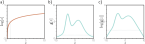
The log transform. a) The log function is monotonically increasing. If z >z ′, then log[z]>log[z ′]. It follows that the maximum of any function g[z] will be at the same position as the maximum of log[g[z]]. b) A function g[z]. c) The logarithm of this function log[g[z]]. All positions on g[z] with a positive slope retain a positive slope after the log transform, and those with a negative slope retain a negative slope. The position of the maximum remains the same.
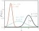
The univariate normal distribution (also known as the Gaussian distribution) is defined on the real line z ∈ R and has parameters μ and σ2. The mean μ determines the position of the peak. The positive root of the variance σ2 (the standard deviation) determines the width of the distribution. Since the total probability density sums to one, the peak becomes higher as the variance decreases and the distribution becomes narrower.
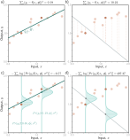
Equivalence of least squares and maximum likelihood loss for the normal distribution. a) Consider the linear model from figure 2.2. The least squares criterion minimizes the sum of the squares of the deviations (dashed lines) between the model prediction f[xi,ϕ] (green line) and the true output values yi (orange points). Here the fit is good, so these deviations are small (e.g., for the two highlighted points). b) For these parameters, the fit is bad, and the squared deviations are large. c) The least squares criterion follows from the assumption that the model predicts the mean of a normal distribution over the outputs and that we maximize the probability. For the first case, the model fits well, so the probability Pr(yi|xi) of the data (horizontal orange dashed lines) is large (and the negative log probability is small). d) For the second case, the model fits badly, so the probability is small and the negative log probability is large.
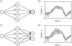
Homoscedastic vs. heteroscedastic regression. a) A shallow neural network for homoscedastic regression predicts just the mean μ of the output distribution from the input x. b) The result is that while the mean (blue line) is a piecewise linear function of the input x, the variance is constant everywhere (arrows and gray region show ±2 standard deviations). c) A shallow neural network for heteroscedastic regression also predicts the variance σ2 (or, more precisely, computes its square root, which we then square). d) The standard deviation now also becomes a piecewise linear function of the input x.
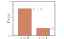
Bernoulli distribution. The Bernoulli distribution is defined on the domain z ∈ {0, 1} and has a single parameter λ that denotes the probability of observing z = 1. It follows that the probability of observing z = 0 is 1 − λ.
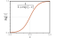
Logistic sigmoid function. This function maps the real line z ∈ R to numbers between zero and one, so sig[z] ∈ [0, 1]. An input of 0 is mapped to 0.5. Negative inputs are mapped to numbers below 0.5, and positive inputs to numbers above 0.5.
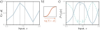
Binary classification model. a) The network output is a piecewise linear function that can take arbitrary real values. b) This is transformed by the logistic sigmoid function, which compresses these values to the range [0, 1]. c) The transformed output predicts the probability λ that y = 1 (solid line). The probability that y = 0 is hence 1 − λ (dashed line). For any fixed x (vertical slice), we retrieve the two values of a Bernoulli distribution similar to that in figure 5.6. The loss function favors model parameters that produce large values of λ at positions xi that are associated with positive examples yi = 1 and small values of λ at positions associated with negative examples yi = 0.
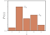
Categorical distribution. The categorical distribution assigns probabilities to K>2 categories, with associated probabilities λ1, λ2, . . . , λK. Here, there are five categories, so K = 5. To ensure that this is a valid probability distribution, each parameter λk must lie in the range [0, 1], and all K parameters must sum to one.
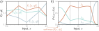
Multiclass classification for K=3 classes. a) The network has three piecewise linear outputs, which can take arbitrary values. b) After the softmax function, these outputs are constrained to be non-negative and sum to one. Hence, for a given input x, we compute valid parameters for the categorical distribution: any vertical slice of this plot produces three values that sum to one and would form the heights of the bars in a categorical distribution similar to figure 5.9.

Cross-entropy method. a) Empirical distribution of training samples (arrows denote Dirac delta functions). b) Model distribution (a normal distribution with parameters θ = {μ, σ2}). In the cross-entropy approach, we minimize the distance (KL divergence) between these two distributions as a function of the model parameters θ.
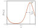
The von Mises distribution is defined over the circular domain (−π, π]. It has two parameters. The mean μ determines the position of the peak. The concentration κ > 0 acts like the inverse of the variance. Hence 1/ √ κ is roughly equivalent to the standard deviation in a normal distribution.
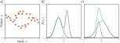
Multimodal data and mixture of Gaussians density. a) Example training data where, for intermediate values of the input x, the corresponding output y follows one of two paths. For example, at x = 0, the output y might be roughly −2 or +3 but is unlikely to be between these values. b) The mixture of Gaussians is a probability model suited to this kind of data. As the name suggests, the model is a weighted sum (solid cyan curve) of two or more normal distributions with different means and variances (here, two normal distributions, dashed blue and orange curves). When the means are far apart, this forms a multimodal distribution. c) When the means are close, the mixture can model unimodal but non-normal densities.
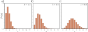
Poisson distribution. This discrete distribution is defined over nonnegative integers z ∈ {0, 1, 2, . . .}. It has a single parameter λ ∈ R+, which is known as the rate and is the mean of the distribution. a–c) Poisson distributions with rates of 1.4, 2.8, and 6.0, respectively.